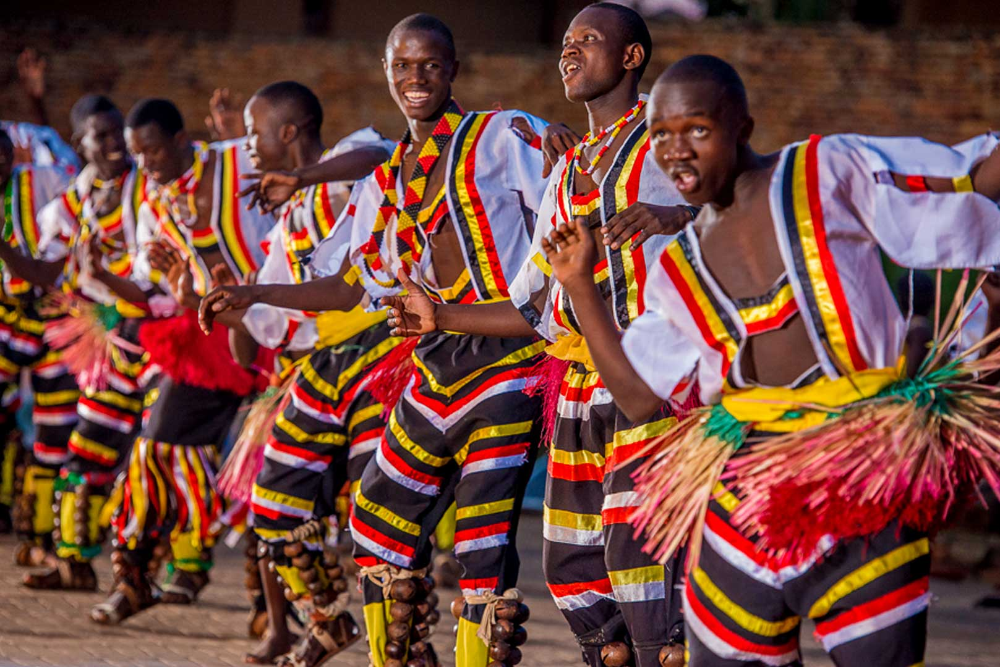

Music and Dance

Uganda is renowned for its lively music and dance. From the traditional drums of the Baganda people to the rhythmic beats of the Lugbara, Uganda's music scene is a vibrant blend of traditional and contemporary sounds. Dance, too, is a significant part of Ugandan culture, with traditional dances like the Ensemble and Kakadubi showcasing the country's rich heritage.
Cuisine
Ugandan cuisine is a testament to the country's agricultural diversity.
From the fresh fruits and vegetables of the countryside to the hearty stews and soups, Ugandan food is a celebration of the land and its bounty.
Traditional dishes like Matoke (cassava leaves), Mukimo (mashed bananas), and Nsima (a staple made from cornmeal) are not just meals but cultural expressions.

Traditions and Customs
Ugandan culture is deeply rooted in traditions and customs that have been passed down through generations. From the Omukama (king) ceremonies of the Baganda to the Namasagali (initiation rites) of the Lugbara, these traditions are integral to the identity and social fabric of Uganda.
Community and Social Life
Ugandan communities are known for their warmth and hospitality. Whether it's the Jambo (greeting) that welcomes visitors or the Wazungu (foreigners) who are always made to feel at home, Ugandans value community and social interaction. The "Ubuntu" philosophy, which emphasizes the interconnectedness of humanity, is a cornerstone of Ugandan society.

Exploring Uganda

Whether you're planning a visit to Uganda or simply curious about the country, our website is your gateway to understanding and experiencing Ugandan culture. From the bustling markets of Kampala to the serene landscapes of the national parks, Uganda offers a unique blend of urban and rural experiences. To fully experience Ugandan culture, visit museums like the National Museum in Kampala or Mbarara University of Science and Technology (MuSAT). Take part in To experience Ugandan culture firsthand, visit museums like the National Museum in
Exploring Uganda
Whether you're planning a visit to Uganda or simply curious about the country, our website is your gateway to understanding and experiencing Ugandan culture. From the bustling markets of Kampala to the serene landscapes of the national parks, Uganda offers a unique blend of urban and rural experiences. To fully experience Ugandan culture, visit museums like the National Museum in Kampala or Mbarara University of Science and Technology (MuSAT). Take part in To experience Ugandan culture firsthand, visit museums like the National Museum in